7.Imprimir
7.1.Função de impressão
Você pode através "Iniciar" - "Dispositivos e Impressoras" - Selecione a impressora adequada - Clique com o botão direito do rato - Configure a função de impressão em "Preferências de impressão", algumas funções seguem-se em baixo:
|
Função
|
Ícone
|
|
Impressão frente e verso manual
|
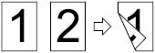
|
|
Impressão coligida
|
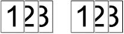
|
|
Impressão inversa
|
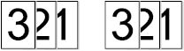
|
|
Integração de multi-página
|
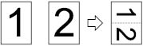
|
|
Impressão de pôster (apenas aplicável para o sistema Windows)
|
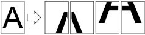
|
|
Impressão aproximada
|
|
|
Tamanhos personalizados
|
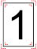
|
|
|
Nota:
|
• As instruções acima tomam o sistema Windows 7 como exemplo.
• Você pode selecionar a impressão de pôster 2x2 impresso em multi-página, para executar a impressão de pôster.
• Você pode abrir as Preferências de impressão, clique no botão Ajuda, consulte a explicação funcional específica. Para as informações sobre como abrir o documento de ajuda, consulte o Capítulo 7.5.
|
7.2.Configurações de impressão
Antes de enviar o trabalho de impressão, pode através dos seguintes dois modos configurar os parâmetros de impressão (como tipo de papel, tamanho do papel e origem do papel).
Sistema operacional
| Configurações de alterações temporárias para o trabalho de impressão
| Alterações permanentes das configurações padrão
|
Windows 7
| 1. Clique no menu Arquivo - Imprimir - Selecione impressora - Propriedades da impressora (os passos específicos variam-se de acordo com as diferenças do sistema operacional).
|
1. Clique no menu Iniciar - Painel de Controle - Dispositivos e Impressoras.
2. Clique com o botão direito do rato no ícone da impressora e selecione as Preferências de impressão, altere as configurações e salve-as. |
Mac OS
| 1. Clique no menu Arquivo - Imprimir.
2. Na janela pop-up altere as configurações.
| 1. Clique no menu Arquivo - Imprimir.
2. Na janela pop-up altere as configurações, clique em Salvar as pré-configurações. (A cada vez de imprimir, deve selecionar as pré-configurações, caso contrário, irá-se imprimir de acordo com as configurações padrão.)
|
|
Nota: |
• A prioridade das configurações do aplicativo é mais elevada do que a das configurações da impressora.
|
7.3.Cancelar a impressão
Durante o processo de impressão, se for necessário cancelar o trabalho, pressione a tecla "Cancelar" no painel de controle da impressora para cancelar o trabalho atual.
7.4.Impressão frente e verso manual
1. O programa do driver suporta a impressão frente e verso manual.
|
Nota: |
• Se o papel for fino, pode ficar amachucado.
• Se o papel estiver enrolado, endireite-o e, em seguida, restaure-lo de volta para a bandeja de entrada de papéis automática.
• Se causar um atolamento de papel ao usar a função de impressão frente e verso manual, consulte o Capítulo 11.1.
|
2. Antes de imprimir, certifique-se de que já são alimentados os papéis de uma quantidade apropriada para a bandeja de entrada de papéis automática.
|
Nota: |
• Para a alimentação de papéis, por favor consulte o Capítulo 2.4..
• Para os tipos de mídia de impressão suportados, por favor consulte o Capítulo 2.1.
• Algumas mídias de papel não são aplicáveis para a impressão frente e verso, ao imprimir pode danificar a impressora, quando o "Tipo de papel" for "papel grosso" ou "película transparente", por favor não tente a "Impressão frente e verso". Quando você selecionar a impressão "inversa", a impressão "2x2 pôster" na caixa de diálogo de Preferências de impressão, não suporta a impressão frente e verso manual.
• Se o papel no ADF bandeja mais de 150, ele pode causar um atolamento de papel ou a impressora não puxa o papel.
|
7.4.1.Como executar a impressão frente e verso manual
1. Abra o trabalho de impressão que deseja imprimir a partir de um aplicativo (como a agenda).
2. Selecione "Imprimir" no menu "Arquivo".
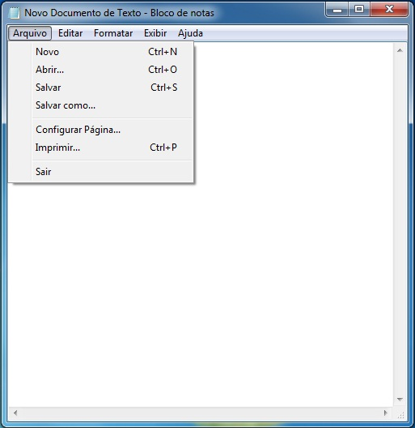
3. Selecione o modelo de impressora apropriado.
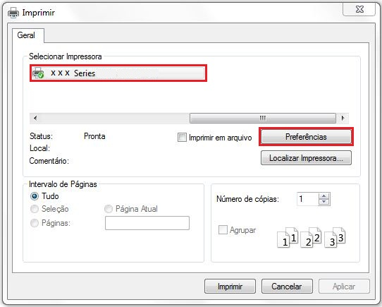
4. Clique em "Preferências", para executar a configuração de impressão.
5. Selecione a "Impressão frente e verso" no cartão de opção "Básica", selecione a opção "Margem comprida" ou "Margem curta".
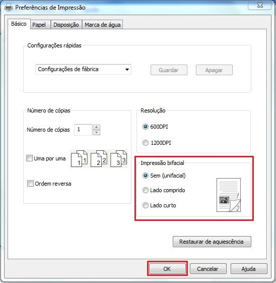
6. Clique em "Confirmar", para concluir as configurações de impressão. Clique em "Imprimir", assim pode ser realizada a impressão frente e verso automática.
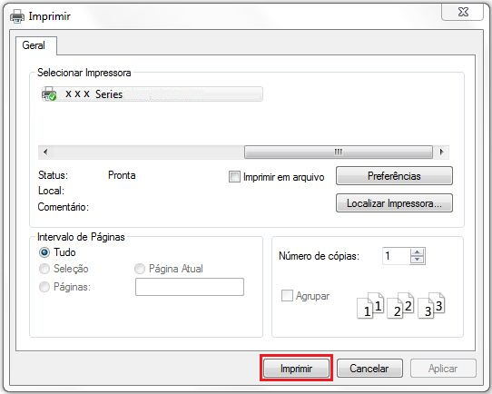
7.5.Abrir o arquivo de ajuda
Você pode abrir as "Preferências de impressão", clique no botão "Ajuda" (apenas aplicável para o sistema Windows). No arquivo de ajuda há uma guia de uso da impressora, pode através da gua de uso compreender as informações de configurações de impressão relevantes.
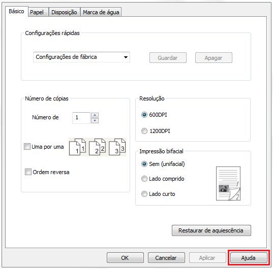
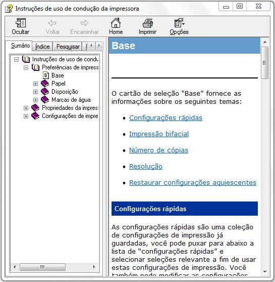